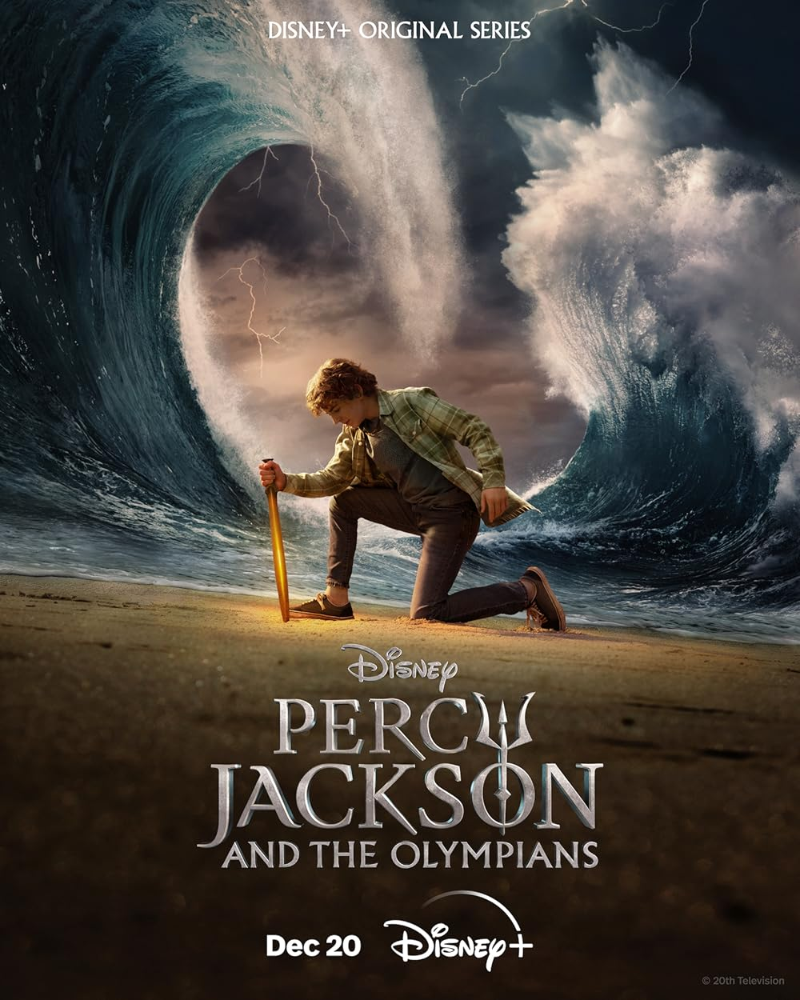
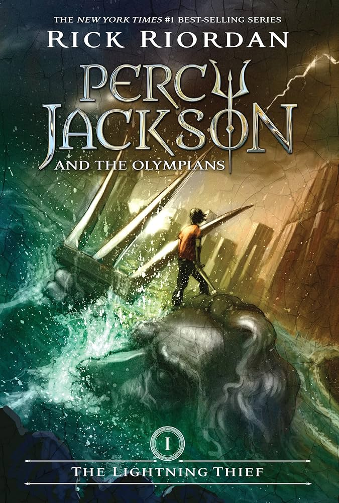

There are my favorite books/games/movies
My favorite Books
On this Page I am going to talk about my favorite books




On this Page I am going to talk about my favorite books
Percy Jackson Great show— as a longtime fan of the books, it did a great job of staying true to the spirit of the books while still making the necessary changes for a TV adaptation— no small feat, considering that a large part of what makes the books so great is seeing Percy’s internal narrative. In addition, all three of the main cast are absolutely stellar! Walker perfectly captures Percy’s attitude and way of interacting with the world, Leah is incredible at portraying Annabeth as both very confident when it comes to the mythical world, but unsure and completely unused to the mortal one, and Aryan honestly steals the show for me half the time.
I never rated Grover that highly as a character before the show (probably because my favorite series is HoO), but they way Aryan plays him, both in moments of genuine emotion and comic relief is absolutely fantastic! The chemistry they all have with each other is also insane. Also, the supporting actors are also incredible— I’m especially going to shout out Luke, Dionysus, and Sally’s actors for their respective performances. Sally has such great chemistry with the actor who plays the younger version of Percy, as well as Walker, and you really empathize and feel for her as a person. Dionysus is absolutely hysterical (esp. the scene where he pretends to be Percy’s dad), but you also never forget that he’s an incredibly powerful god at the same time. There’s a line between comedy and madness, and the actor walks it incredibly well. Finally, if I didn’t already know Luke’s story, I would absolutely trust and love him as he appears in the first couple of episodes, but as it is, the foreshadowing is so well done, and the actor does a great job of simultaneously portraying this lovable mentor figure for Percy and alluding to his motivations for later actions. I’m so excited to see where this series is heading, and I honestly think it’s the adaptation we deserved!
-- Azelma MortlakePercy Jackson
Great show— as a longtime fan of the books, it did a great job of staying true to the spirit of the books while still making the necessary changes for a TV adaptation— no small feat, considering that a large part of what makes the books so great is seeing Percy’s internal narrative. In addition, all three of the main cast are absolutely stellar! Walker perfectly captures Percy’s attitude and way of interacting with the world, Leah is incredible at portraying Annabeth as both very confident when it comes to the mythical world, but unsure and completely unused to the mortal one, and Aryan honestly steals the show for me half the time.
I never rated Grover that highly as a character before the show (probably because my favorite series is HoO), but they way Aryan plays him, both in moments of genuine emotion and comic relief is absolutely fantastic! The chemistry they all have with each other is also insane. Also, the supporting actors are also incredible— I’m especially going to shout out Luke, Dionysus, and Sally’s actors for their respective performances. Sally has such great chemistry with the actor who plays the younger version of Percy, as well as Walker, and you really empathize and feel for her as a person. Dionysus is absolutely hysterical (esp. the scene where he pretends to be Percy’s dad), but you also never forget that he’s an incredibly powerful god at the same time. There’s a line between comedy and madness, and the actor walks it incredibly well. Finally, if I didn’t already know Luke’s story, I would absolutely trust and love him as he appears in the first couple of episodes, but as it is, the foreshadowing is so well done, and the actor does a great job of simultaneously portraying this lovable mentor figure for Percy and alluding to his motivations for later actions. I’m so excited to see where this series is heading, and I honestly think it’s the adaptation we deserved! -- Azelma Mortlake
Transformers:The Last Knight -
This Movie is one of the best transformers related movies I’ve ever seen, I didn’t like age of extinction or bumblebee because they felt so new.
The best thing about the first three Shia LaBeouf movies were that they were very poorly designed and terribly produced and written. But that’s what made them legendary, this movie carries that on.
Though I don’t rank it above the Shia LaBeouf trilogy, this movie has good action sequences and very amazing, fantastic story telling features, and absolutely amazing graphics. This is a very good way to bring the old movies back to life. Watch this movie, you might not like it at first but then watch the first three, then age Of extinction and bumble bee. Then watch this movie again and you will love it, if not wait 3 or 4 years and hopefully you’ll like it. 5 stars easily, love it!
-- 7C Fast and Furious 8 -
This is the best movie ever all of the fast and furious movies are the best and I can't wait for 9 to come out and 10 and hope more too come.
And another Hobbys and Shaw movie is coming out am I right. This is 10 out of 10 should watch the best and should watch other fast and furious movies like 1 2 3 4 5 6 7 8 and 9 is coming our 2021 April something and 10 is coming out on 2022
I wish they could come out sooner but I guess that whats the movies more interesting to watch I cant wait for the other movies come out and I'm really happy for Hobbys and Shaw to come out . fast and furious 8 was so good.
I heard and saw that Cardie b and John Cena is going to be in the movie fast and furious 9 OMG so exited. Love It SOOOOOOOOOOOO much must watch. And I did cry my eys out it looks like someone poured a whole water bottel on my face at the end of fast and furious 7 and 8 cuz Brian died in 7 in real life and at the end of 8 Dom named his a baby after Biran died tell me thats not the most cutest thing you ever heard I already know that Dom and Letty are going to be good parednts and brian is very lucky to have the most caring parents that can drive cars the fastest cars and have a strong dad and parents the can fight and just be cool. I wish i could one of the casts hahha even though im still 12 whatever i know i will never but its a dream one more thing i wish that shaws sister in the movie hobbys and shaw can be in the fast and furious 9 or 10 so the rock can have a girl in the movie there so cute together. Love Fast and Furious:)
-- kim saji